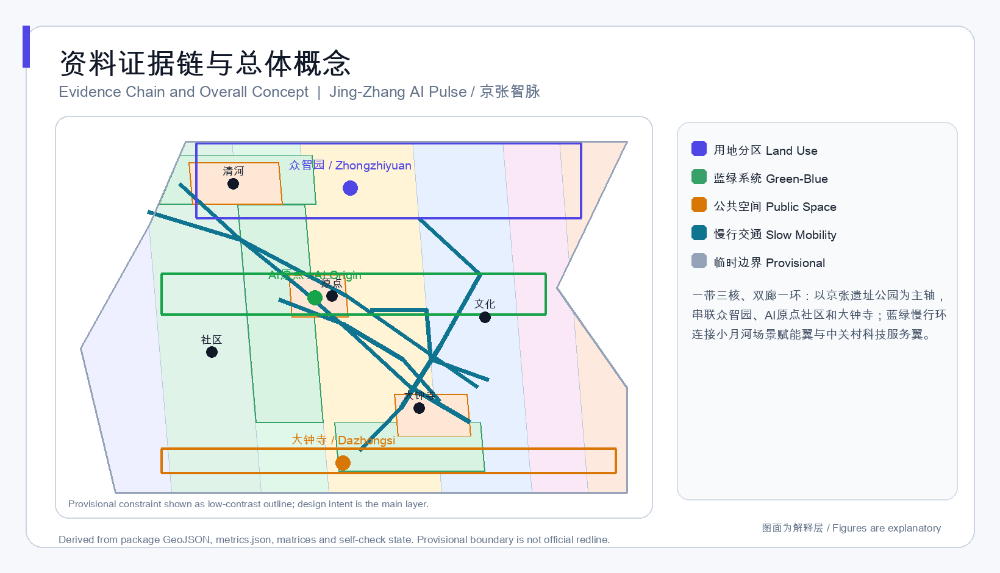
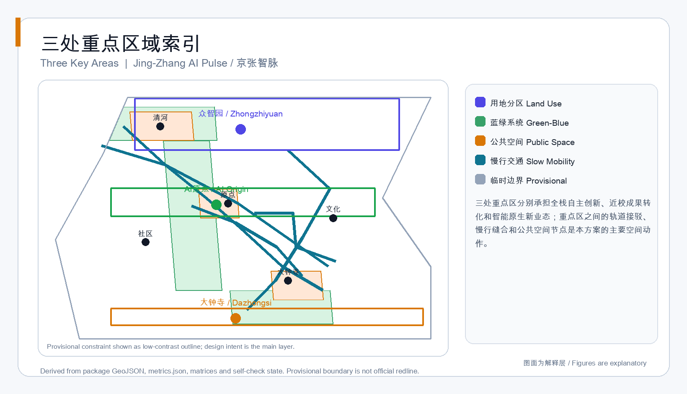
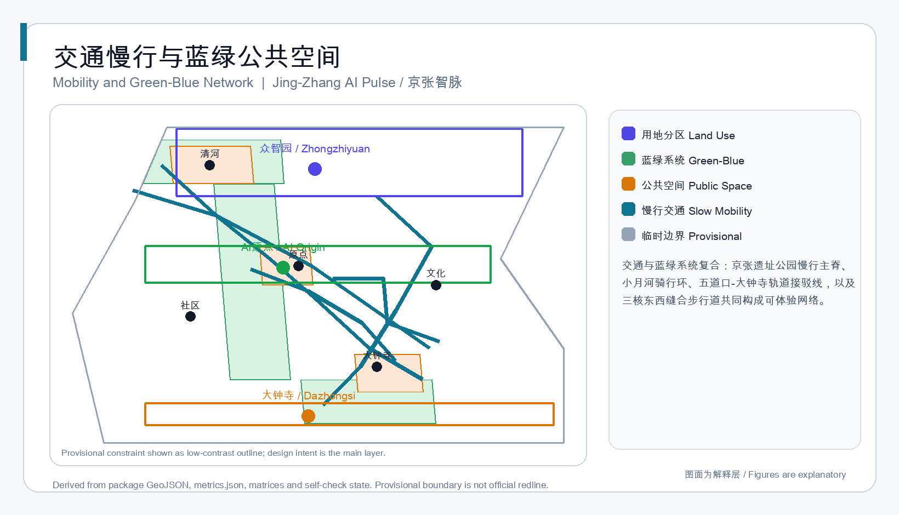
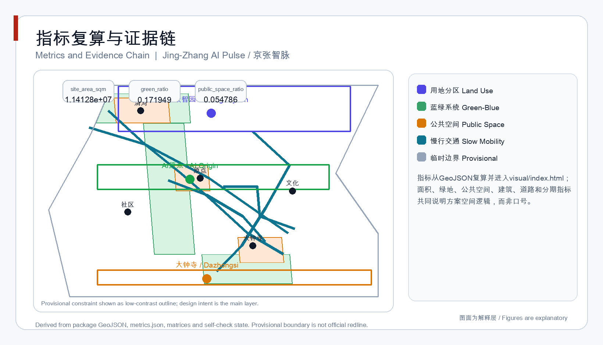

Jing-Zhang AI Pulse: Urban Design Concept for the Centennial Jing-Zhang AI Innovation Belt
A concept proposal organized as one heritage belt, three innovation cores, two corridors, and one green-blue slow-mobility loop; all spatial recommendations remain conceptual until official boundaries and regulatory data are available.
Jing-Zhang AI Pulse: Urban Design Concept for the Centennial Jing-Zhang AI Innovation Belt
Design Basis and Source List
This concept uses the official pre-qualification announcement from the Haidian Branch of Beijing Municipal Commission of Planning and Natural Resources as the task basis, and the agent-facing open-call taskbook as the co-creation requirement source 来源 来源. The repository currently provides provisional rough boundaries instead of official GIS redlines, so every spatial claim is marked as provisional intake 来源 空间数据.
The source registry distinguishes formal-ready public documents, background materials, and provisional-only geometry. This proposal uses official announcement text and the cleared agent taskbook for task coverage, while all generated boundary, land-use, building, road, green-space, public-space, and phasing layers remain concept data to be recalculated after official files arrive 来源 深度.

Three-Level Scope Framework
The proposal follows the announced three-level scope: a coordinated research area of about 43.6 square kilometers, an overall design area of about 11.4 square kilometers, and key detailed design areas totaling about 368.4 hectares 来源 指标. The coordinated research area develops the AI ecosystem and future city strategy; the overall design area organizes urban renewal, land use, mobility, municipal services, the heritage park belt, and urban character; the key areas translate strategy into detailed design for Zhongzhiyuan, Beijing AI Origin Community, and Dazhongsi 深度.
The proposed name system is "Jing-Zhang AI Pulse", with sub-brands called Origin Loop, Acceleration Garden, and Smart Commerce Node. The logo direction uses a continuous rail-pulse curve that connects three nodes, representing railway history, AI data flow, and public-space vitality 来源 标准 深度.
Coordinated Research Area: Industry and Future City Research
The coordinated research area should support the three positions of "Centennial Jing-Zhang Culture Belt", "Urban AI Life Experience Belt", and "AI Integration Innovation Belt", together with five functions covering full-stack innovation, world-class AI ecosystem, AI+ scenario empowerment, intelligent vibrant city, and global AI governance 来源 标准.
The proposal organizes the research area as a closed loop from university origins, open-source collaboration, enterprise transformation, public experience, and international communication. It also translates global ecosystem lessons from places such as the San Francisco Bay Area, Hangzhou, Singapore, King's Cross, Station F, Tel Aviv, and Shenzhen into spatial mechanisms including university conversion streets, open-source halls, governance sandboxes, international pitching rooms, and public experience routes 来源 深度.
Future city strategy is expressed through three reviewable forms: compact walkable blocks with AI R&D, testing, display, services, residence, and public experience; transparent data and governance interfaces requiring human review 标准; and annual events, developer community operations, and public experience routes embedded in spatial operation 深度.
Overall Design Area: Urban Renewal and Regulatory-Plan-Level Urban Design
The overall design area uses a spatial structure of "one belt, three cores, two corridors, and one loop". The belt is the Jing-Zhang Heritage Park vitality belt; the cores are Zhongzhiyuan, Beijing AI Origin Community, and Dazhongsi; the corridors are the Zhongguancun technology service corridor and the Xiaoyue River scenario corridor; the loop is a green-blue slow-mobility and public experience loop 来源 空间数据 深度.
Land use is expressed using national territorial classification logic in geometry/land_use.geojson, with complete non-overlapping coverage of the submitted boundary. geometry/buildings.geojson expresses conceptual building footprints, and geometry/roads.geojson expresses slow-mobility and transit connection concepts 标准 空间数据 指标.
Because approved FAR, height, density, setback, and road-redline controls are missing, the proposal does not invent statutory control values. These are recorded as unknown pending official data 来源 指标 深度. Building strategy only distinguishes retain, renovate, new-build, and pending-confirmation directions without claiming parcel-level decisions 深度.
Detailed Design of Key Areas
Zhongzhiyuan is positioned as a garden-style full-stack autonomous innovation district. The concept strengthens the Qinghe riverfront, organizes full-stack innovation display, a security and governance sandbox, low-carbon compute service points, and industrial test scenarios 空间数据 来源.
Beijing AI Origin Community is positioned as a university-adjacent transformation and talent community. The concept connects campuses, parks, and streets through slow mobility, and adds an open-source publishing hall, transformation street, talent service hub, and integrated transit station access 空间数据 深度.
Dazhongsi is positioned as an urban intelligent-economy and international exchange district. The concept organizes four-quadrant pedestrian connection around Dazhongsi station, public environment renewal around leading enterprises, intelligent-agent and smart-terminal display, content consumption, and a data-element reception space 空间数据 深度 指标.
All three key areas use provisional polygons and therefore express design direction only. When official polygons are available, key-area area, land-use coverage, buildings, roads, green space, public space, and metrics must be recalculated 来源 空间数据.

AI Innovation Ecosystem, Personas, and AI+ Scenarios
The proposal defines five user personas: open-source developers, startup teams, leading-enterprise visitors, surrounding residents, and university faculty and students 来源. Developers map to open-source publishing and night collaboration spaces; startups map to accelerators, test fields, and edge-compute service points; enterprise visitors map to international pitching rooms and public space around leading enterprises; residents map to community services and the heritage park network; faculty and students map to university conversion streets and AI education experience points 深度.
The proposal includes more than ten scenario cards. They include an open-source publishing hall, security governance sandbox, edge-compute service station, AI slow-mobility navigation, Dazhongsi international pitching room, Qinghe low-carbon innovation corridor, university conversion street, data-element reception space, AI life-services street, and global AI activity-week route 来源 空间数据 指标.
Three scenarios are treated as industry test and validation pilots: the security governance sandbox tests evaluation workflows, the edge-compute service station tests public-service capacity, and AI slow-mobility navigation tests explainable transport assistance. Every scenario must use minimal data, public or cleared sources, explainable outputs, and human review 标准 深度.
Land Use, Building Scale, and Retain-Renovate-Demolish Strategy
Land-use polygons use validated national classification codes and partition the submitted boundary into AI R&D, industry and commerce, education and research, community services, culture, green open space, and residential community service areas 标准 空间数据 指标. Building footprints are conceptual containers for R&D buildings, labs, incubators, offices, mixed-use blocks, university conversion hubs, talent housing, community services, cultural display, and transit service halls 空间数据.
The retain-renovate-demolish strategy is limited to a decision framework: preserve cultural heritage and public assets, renovate inefficient frontages, build necessary new capacities, and confirm ownership and engineering conditions before any parcel-level conclusion 深度. Building-footprint area is a concept metric, not approved construction volume 指标 来源.
Transport, Rail, Municipal Infrastructure, and Public Services
Mobility strategy prioritizes transit integration, continuous slow mobility, and local circulation around leading enterprises. The concept includes five route types: the heritage park slow-mobility spine, the Xiaoyue River cycling loop, the Wudaokou-Dazhongsi transit connection, the east-west walking connection between the three cores, and local access circulation 空间数据 指标.
Transit integration focuses on Wudaokou, Qinghua East Road West, and Dazhongsi station. Slow mobility shares cross-sections with green-blue public space, while parking and bicycle storage should be deepened near station entrances, at the edges of public space, and within enterprise parcels under official traffic review 来源 空间数据 深度.
For municipal and new infrastructure, the proposal suggests a shared deepening framework for distributed energy, edge compute, public data services, and conventional municipal facilities. Without road redlines, utility maps, fire safety, flood control, and energy-capacity data, no engineering alignment, utility relocation, or capacity conclusion can be made 深度 来源.

Blue-Green Network, Public Space, and Urban Character
The blue-green network uses the Jing-Zhang Heritage Park as the historic spine and Qinghe and Xiaoyue River as northern and southern water-related interfaces. geometry/green_space.geojson and geometry/public_space.geojson express a continuous network of parks, plazas, slow routes, and scenario nodes 空间数据 指标 指标.
Public-space design includes three anchors: the AI Origin publishing plaza, the Qinghe public living room near Zhongzhiyuan, and the Dazhongsi station four-quadrant plaza 空间数据 指标. Each public space should include explainable wayfinding, honor display, event operation, and human review interfaces 深度.
Urban character combines railway memory, Zhongguancun innovation density, and transparent AI culture. The heritage park frontage favors lower cultural buildings and open space; R&D and industrial districts favor continuous street fronts, active ground floors, and roof greening. Height, massing, and character controls remain pending official regulatory and heritage data 标准 深度.
Renewal Projects, Implementation Policy, and Phasing
The renewal project list is intentionally discussable and does not presume ownership. Early projects prioritize public space, slow mobility, industry services, and operation mechanisms, including heritage-park gap stitching, Qinghe innovation frontage, the university conversion street, Dazhongsi station four-quadrant connection, AI public-service and edge-compute nodes, and a global AI activity-week route 空间数据 深度.
Phasing has three periods: near-term light public-space, event, and service-platform pilots; medium-term renewal deepening after transport, municipal, ownership, and regulatory conditions are clearer; long-term completion of urban character, infrastructure, and operating mechanisms 空间数据 指标 深度.
Implementation policy suggestions cover urban renewal coordination, open scenario operation, data governance, public participation, copyright clearance, and international cooperation. They are written as deepening directions, not government commitments 来源 深度.
Metrics, Area Recalculation, and Compliance Matrix
Metrics are grouped into three levels: spatial metrics recalculated from submitted geometry, including site area, green ratio, and public-space ratio 指标 指标 指标; building footprint, road length, and phasing area are separately recalculated from their layers 指标 指标 指标. Statutory control metrics require official regulatory data, such as FAR and height; operation metrics require continuous calibration, such as participation, talent density, and service satisfaction.
Area recalculation uses EPSG:4548 while GeoJSON exchange uses EPSG:4326. metrics.json and GeoJSON files are the authoritative recomputation layer 深度 空间数据. The compliance matrix covers announcement tasks 1.3, 1.4, 1.5 and agent.1 through agent.6; the standard matrix covers mandatory professional standards; the design-depth matrix marks required depth items complete 深度.

Risk, Copyright, and Compliance
Key risks are the missing official boundary, missing regulatory controls, insufficient existing-building and ownership data, unconfirmed heritage and blue-line constraints, and unverified transport and municipal engineering conditions 来源 深度 空间数据. All spatial recommendations are concept suggestions, reference schemes, or materials for professional teams to deepen; they do not replace formal planning or constitute government approval 来源.
Copyright and compliance require public or cleared sources only. Generated figures, PDFs, and HTML are local derived outputs; trademarks, fonts, images, portraits, and enterprise identities require separate clearance; visual pages must not load remote resources 来源. The AI agent is responsible for traceable sources, spatial data, metrics, figures, and text, while final judgment belongs to humans and professional teams 标准.
References
- Pre-qualification announcement for the Centennial Jing-Zhang AI Innovation Belt international urban design solicitation, Haidian Branch, Beijing Municipal Commission of Planning and Natural Resources.
- Agent-facing open-call taskbook for the Centennial Jing-Zhang AI Innovation Belt urban design solicitation.
- Urban Design Management Measures, Ministry of Housing and Urban-Rural Development.
- Measures for Compilation and Approval of Regulatory Detailed Plans, Ministry of Housing and Urban-Rural Development.
- Guidelines for Land and Sea Classification for Territorial Spatial Survey, Planning, and Use Control, Ministry of Natural Resources.
- Provisional rough boundary and key-area polygons prepared by repository maintainers from public announcement text.
- Machine-readable indexes:
sources.json,metrics.json,compliance_matrix.json,standard_matrix.json,design_depth_matrix.json来源。